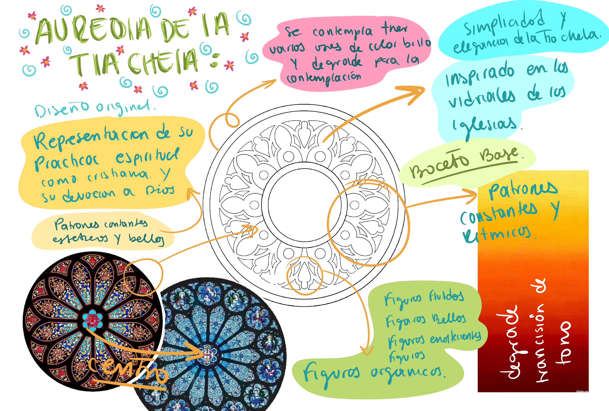
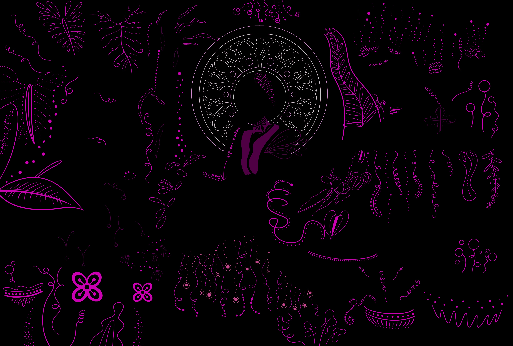
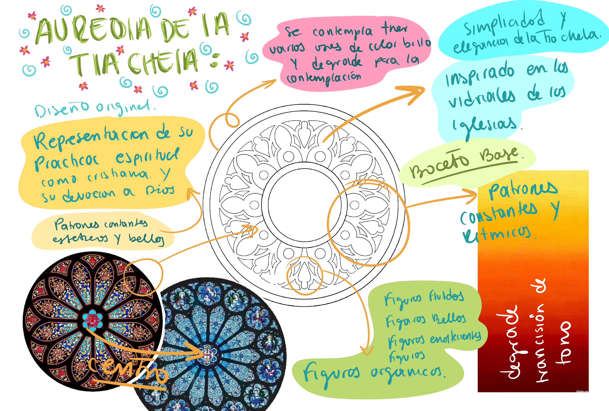
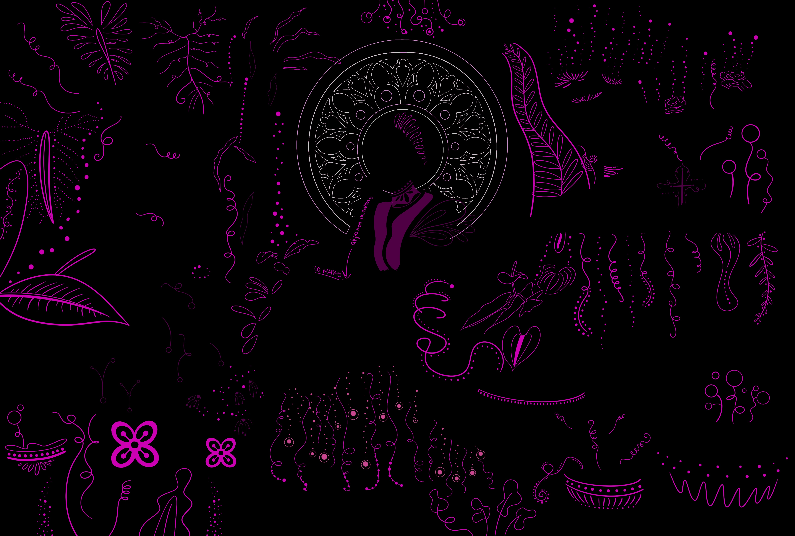

Graciela Viveros es una artista plástica y visual, hija del litoral pacífico, nacida y criada en Buenaventura. Debido al desplazamiento forzado y la violencia, tuvo que migrar y establecerse en la ciudad de Cali, convirtiéndola en su nuevo hogar, donde pudo echar raíces como las plantas. Su conexión con la tierra y la naturaleza es profundamente íntima y especial. Este amor y respeto por su territorio la motivaron a indagar y experimentar con él, utilizando los minerales encontrados en las minas como medio para expresar sus grandes inspiraciones artísticas.

 



MOODBOARD
BOCETO
FOTOGRAFÍA
DESCRIPCIÓN
AUREOLA
INTERVENCIÓN
Graciela considera importante el uso de plantas medicinales y ornamentales debido a sus significativas repercusiones para el cuerpo, el alma y el espíritu.
Las rosas fueron seleccionadas ya que para ella simbolizan la sangre de Cristo. Esta elección subraya su profunda conexión espiritual y emocional con su fe y sus valores.
Para Chela, se diseñó un altar pensando en su territorio como protagonista central de la ambientación y estructura narrativa, tanto visual como metafórica. Durante la entrevista, ella hizo énfasis en la importancia de las plantas, la naturaleza, Dios y el agua. Por lo tanto, su altar se compone de elementos significativos como el relicario, reflejando su fe cristiana. Además, se incluyeron elementos como el banano pelipita y la mazorca amarilla.
En cuanto a la ambientación fotográfica, se decidió no utilizar un fondo plano. En su lugar, se optó por utilizar una pared cubierta con la frondosa hoja uña de gato, que adorna y domina el espacio de la sesión fotográfica. Esta pared, verde y espesa, simula el entorno natural y el territorio donde Chela creció y al que anhela regresar. También se consideraron velos blancos, utilizados como un telón en donde el viento pasa ligeramente, evocando sentimientos de nostalgia, delicadeza, santidad y paz, re creando un lugar sagrado.
La obra de arte resultó ser una grata sorpresa, ya que se integró armoniosamente en la fotografía, aportando cohesión visual y fortaleciendo el mensaje narrativo. Es importante destacar que Chela fue posicionada mirando hacia su obra, lo cual refleja su contemplación como autora de la obra y la naturaleza como testigo de la inspiración gestada en el entorno que la rodea.
Graciela Viveros, expresó tener una conexión profunda con Dios, quien se manifiesta a través de la naturaleza, el agua y la vida misma.
Por lo cual, para la creación de la aureola de Chela se tomó como inspiración los vitrales de las antiguas iglesias, que se componen de patrones rítmicos y geométricos, capturando su translucidez para transmitir una sensación de belleza, misticismo y delicadeza que reflejara la personalidad y obra de Chela.
En la intervención ilustrativa, se enfocó en capturar los detalles de las hojas, prestando atención a las venas, la textura de las plantas y las flores.
Se añadieron únicamente detalles gráficos que enriquecieran la belleza natural destacada en la imagen, complementando así la narrativa.
Graciela, conocida cariñosamente como "Chela" por sus familiares, amistades y seres queridos, nos invita a recordar que la tierra es un lugar de memoria, creación divina y ancestral, testigo de todas las manifestaciones artísticas, rituales y espirituales que atraviesan a las mujeres negras.
Chela diseñó e intervino personalmente el vestido que llevaba puesto. Esta idea surgió de su deseo de crear un vestido que reflejara sus intereses en la naturaleza, específicamente interviniéndolo con pinturas de flores hechas a mano.